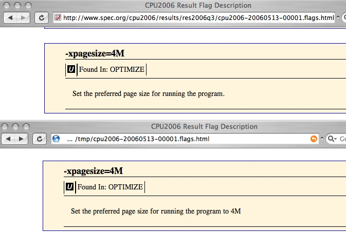

SPEC OMP2012 Flag Description Format
Last updated: $Date: 2012-10-05 11:09:09 -0400 (Fri, 05 Oct 2012) $ by $Author: BrianWhitney $
(To check for possible updates to this document, please see http://www.spec.org/omp2012/Docs/ )
ABSTRACT
This document describes the SPEC OMP2012 flags description file format.
|
Element order, from below:  |
The structure of flags files:
- User flags files are separated into two kinds: compiler flags files and platform flags files.
- There is a DTD (Document Type Description) which must be used for reportable
results.
- The DTD allows some elements to appear in both compiler and platform flags files, as summarized in the diagram
on the left. (Clicking the diagram takes you to the section that describes the
elements.)
- Notice that some elements can appear in either file. Given a choice, which should you use? A set of guidelines are available.
- An example of adapting to the new form is in section 7, below.
|
Overview
Selecting one of the following will take you to the detailed table of contents
for that section:
Purpose
1. File Types, Usage, and Reporting
2. Flags File Structure
3. Flag Description Elements and Attributes
4. Other elements
5. Precedence
6. Best Practices
7. Updating SPEC CPU2006 V1.1 flags files to SPEC OMP2012
Detailed Contents
Purpose
1 File Types, Usage, and Reporting
1.1 Flag File Types
1.1.1 Suite-wide flags file
1.1.2 Per-benchmark flags files
1.1.3 User flags files
1.1.3.1 Compiler flags file
1.1.3.2 Platform flags file
1.2 Flag file usage
1.2.1 Required and optional user flags files
1.2.2 Including a file
1.2.3 Re-use is encouraged
1.2.4 Saving, extracting, removing, and updating flags files
1.2.5 Which options belong in which user flags file?
<-- Table: Guidelines for
placement
1.3 Reporting
1.3.1 Flags dump
1.3.2 Per-result flags report
1.3.3 Effect on other outputs
1.4 Example flags files
2 Flags file structure
2.1 Syntax basics
2.1.1 Tags, elements, and attributes
2.1.2 Enclosing tags and DTD
2.1.3 HTML comments are supported
2.1.4 Regarding embedded HTML
2.1.5 Element order <-- Diagram: elements by file type
2.2 Common elements
2.2.1 Suggested filename (mandatory)
2.2.2 Title (mandatory)
2.2.3 Style sheet
2.2.4 Submit command
2.2.5 Software environment
2.3 Compiler flags file elements
2.3.1 FDO settings
2.3.2 Header (top level)
2.3.3 Headers for each class
2.3.4 Named Flags
2.4 Platform flags file elements
2.4.1 OS tuning
2.4.2 Virtual machine settings
2.4.3 Firmware settings
2.4.4 Parts and options
3 Flag Description Elements and Attributes
3.1 Flag name (mandatory)
3.2 Flag class (mandatory)
3.2.1 "mandatory" class
3.2.2 "forbidden" class
3.2.3 "portability" class
3.2.4 "optimization" class
3.2.5 "compiler" class
3.2.6 "other" class
3.2.7 "unknown" class
3.3 Regular expression (mandatory, but defaulted)
3.3.1 Default regular expression (the common case)
3.3.2 Full Perl regular expressions may be used
3.3.3 Substituting captured text
3.3.4 When \b won't work
3.3.5 Regular expression references
3.4 Descriptive text (mandatory)
3.4.1 Example: update descriptive text with rawformat
3.5 Including other flags
3.5.1 Include by "flag" attribute
3.5.1.1 Adding the "flagtext" attribute
3.5.2 Include by "text" attribute
3.5.2.1Splitters
3.6 List of compilers
3.7 Example flag text
3.8 Example replacements
3.9 Controlling flag display
3.10 Indication of automatic parallelism
3.11 Other attributes
4 Other elements
5 Precedence
6 Best Practices
6.1 Validate .xml
6.2 Validate .html
6.3 Combine files wisely
6.4 Separate unique content
6.5 Choose filenames wisely
7 Updating SPEC CPU2006 V1.1 flags files to SPEC OMP2012
7.1 Symptoms of old flags files
7.2 Example: Updating a SPEC CPU2006 V1.1 flags files to SPEC OMP2012
Purpose
SPEC OMP2012 provides benchmarks in source code form, which are compiled under control of SPEC's toolset. Compiler
flags (such as -O5 or -unroll) are detected and reported by the
tools, with the help of flag description files. A flag description file provides information such as:
- Whether a flag is to be considered under SPEC's rules for "Portability"
- Whether a flag is allowed at all, or is "Forbidden"
- How to describe a flag in reports (e.g. "the -unroll flag allows loop bodies to be
duplicated")
- How to recognize a flag. Is it spelled "-unroll 4", or is it "/unroll=4"? Or how about "-unroll:{inner=4,outer=4,tuplesmax=31K}" with
each of the three subsections considered as optional?
Flags description files are not limited to compiler flags. Tuning descriptions have historically been called
"flags files", but flag description files are also used to describe other performance-relevant options.
Flag description files are XML-based. This document covers the format of a flags description file and the valid values
for the various attributes.
This document assumes that you have at least some familiarity with creating HTML documents (via writing HTML, that is, not
by having something else generate HTML on your behalf). Familiarity with XML is not essential, but may be helpful.
- A few basic concepts, such as "tag", "element", and "attribute" are briefly introduced in section 2.1.1
- The definitive source for knowledge of XML is www.w3.org
- For an introduction, you might do better to try your favorite search engine with the phrase "XML introduction".
1. File Types, Usage, and Reporting
1.1 Flag File Types
Flag descriptions come from three sources: the benchmark tools (Suite-wide flags file), the benchmarks (Per-benchmark flags
files), and the tester (User flags files). All three conform to the same format (the flag description DTD, as described in section 2.1). They differ primarily in what may appear in each.
1.1.1 Suite-wide flags file
The suite-wide flags file contains flags that are applied to all compiles and are in general not switchable (the
"mandatory" class; flag classes will be explained more fully later). Flags listed in this file are not typically reported.
It is supplied by SPEC as $SPEC/benchspec/flags_mandatory.xml.
If SPEC should need to update the suite-wide flags file, it will be posted at the SPEC web site. You can update your local
copy using runspec --update_flags.
1.1.2 Per-benchmark flags files
The per-benchmark flags files describe optional portability flags and flags that are applied by default (such as those in
$SPEC/benchspec/OMP2012/nnn.benchmark/Spec/object.pm $bench_flags). Per-benchmark flags files are
supplied by SPEC as $SPEC/benchspec/OMP2012/nnn.benchmark/Spec/flags.xml.
If SPEC should need to update the per-benchmark flags files, they will be posted at the SPEC web site. You can update your
local copies using runspec --update_flags.
1.1.3 User flags files
The user provides one or more flags files to describe either compiler flags or platform-related settings.
- SPEC has clarified that, in general, result pages should state
what tuning has been done, and flags files should state what the tuning means.
- Compiler flag descriptions are separated from platform description items. The intent of the separation of compiler
flags from platform flags is to improve the probability that things which tend to change together are described together,
and that things which tend to change separately are described separately.
1.1.3.1 Compiler flags file
A compiler flag description file is a user flags file that describes build-time options used to create benchmark binaries.
It is also used to describe features and settings related to the compilation environment. For more information about which
items to put into which flags file type, please see section 1.2.5.
1.1.3.2 Platform flags file
A platform flag description file is a user flags file that describes characteristics of the system being tested. For more
information about which items to put into which flags file type, please see section 1.2.5.
1.2 Flag file usage
1.2.1 Required and optional user flags files
You must provide a compiler flags file. If you do not, your result will be marked "invalid", because the run
rules require that all tuning must be described. For example, you would
use a compiler flags file to describe the meaning of:
--optimize
If needed, you may provide a platform flags file. For example, if you use a firmware setting such as the following,
you would explain it in a platform flags file:
Power Management: Server Throughput
Optionally, you may provide more than one of either type. For example, you might add another platform flags file to
describe use of virtual machines.
1.2.2 Including a file
User flag description files may be included via the config file (by the flagsurl variable) or via the runspec command line --flagsurl switch. Each file's location may be specified as either a path on the local file
system or as a file://, ftp://, or http://
URL. HTTPS is not supported.
In particular, your config file or runspec command can re-use a previous flags file by picking it up directly from http://www.spec.org/omp2012/flags/.
1.2.3 Re-use is encouraged
Flags Files Are Reusable - and they should be re-used. When multiple results use the same compiler, they can, and
probably should, use the same compiler flags file. When a series of hardware products share a common BIOS, they can, and
probably should, share a single platform file that describes that BIOS. Re-using flags files allows edits to be propagated
to multiple affected result pages.
Making it easier to re-use flags files is the point of the requirement to
separate compiler and platform flags. The intent is that items which tend to change together should be described together;
and things that change on separate schedules should be separated.
1.2.4 Saving, extracting, removing, and updating flags files
User flag descriptions are automatically saved within the raw result file so that the result may be
reformatted without requiring access to the flags file.
You can use extract_flags to copy the flags from a result file to a
new file.
The flag descriptions stored in the raw file will be removed if the result is formatted with the 'noflags' pseudo-flags
file (--flagsurl noflags).
The stored flag descriptions can be updated: if you use
runspec --rawformat --flagsurl=newflags1.xml,newflags2.xml
then the above-named two flag description files will replace any descriptions stored in the raw result
file. This feature can come in very handy if you need to update your user flags file after you have completed your
measurement run. For example, if a flag changes its meaning with a new compiler version, or you find that you have committed
typopgraphical errors that cause flags to unexpectedly be reported as "unknown", runspec
--rawformat can easily be rerun as needed.
Note that when reformatting with a new user flags file, all of the stored flags files will be replaced. If
multiple flags files were used when formatting a result, it is not possible to selectively replace only one. Instead, extract all of them; make your edits; and then put them all back in with rawformat.
An example of using rawformat to update a flags file can be found in section 3.4.1.
1.2.5 Which options belong in which user flags file?
Some options may be described in either a compiler flags file or a platform flags file. This section explains why SPEC
allows that flexibility, and explains how to pick which file type to use. First, a reminder:
The intent of the separation of compiler
flags from platform flags is to improve the probability that things which tend to change together are described together, and
that things which tend to change separately are described separately.
For some kinds of information, the placement is obvious. For example:
- The description of the f90 switch --optimize belongs in a compiler flags file.
- A firmware or BIOS setting selects main memory speed. Definitions of available BIOS options, and their meanings,
belong in platform flags files.
- A ulimit stack size setting is needed so that the f90 compiler has enough space to compile
the benchmarks. Although ulimit is not a compiler flag (it is a shell command), because of the
fact that it is needed in order to compile the benchmarks, it should be explained in the compiler flags file.
So far, these examples are straightforward, and they match the intent stated in the box above:
- If the compiler changes so that additional ulimit options are needed (perhaps the number of
available open file descriptors), it would be convenient to update the description of compile-time limit setting in the
compiler flags file, where it can be picked up by all users of that compiler.
- If a platform manufacturer runs the benchmarks using its new platform-unique BIOS option Power
Management: Server Throughput, the manufacturer need not modify the compiler flags file; rather, the option would be
described separately in a platform flags file unique to that manufacturer.
Gray areas: Some options are harder to classify, as can be seen with these examples:
- A compiler option, --parallel, is closely tied to a run time environment variable OMP_NUM_THREADS.
- The benchmarks are run on CPU cores selected by a numactl command. The command has no direct
relationship to compiler options.
Example 4 can be argued either way: that OMP_NUM_THREADS should be described in the compiler
flags file because it is closely related to a compiler flag; or that it should be in the platform file because it is set at
run time, not compile time. For environment variables, SPEC allows you to make either choice. Note that you can set run-time environment variables via the config file option preenv; doing so may be a very good idea for environment variables that are closely tied to
compiler options.
At first glance, for example 5, there seems to be no gray area: obviously, numactl is a runtime
setting, so it seems that it should be described in the platform file. But what if the person who selects the numactl command is the same person who selects the compile options, and this person furthermore calls numactl via the config file option submit? In this case,
we fall back on the original intent: to improve the probability that things which tend to change together are described together.
Because submit options are often changed at the same time as compile options, they may be described in
either a compiler flags file or a platform flags file.
Having considered these examples, we are ready to describe a set of guidelines.
Table 1: Guidelines for placement of descriptions.
If an option can be described in multiple places, SPEC recommends choosing the location using these
criteria: |
| A |
Result pages should state what tuning is chosen. |
| B |
Flag description files should describe what the tuning means. |
| C |
If the tuning is required in order to build the benchmarks, then describe it in a compiler flags file. |
| D |
If the tuning relates to the run-time environment and is invisible to the build process (even after considering config
file features such as preenv and submit), then describe it in a platform flags file. |
| E |
For options that do not fit either of the previous two guidelines, please estimate whether it is likely to change as
compilers evolve or to change as platforms evolve, and pick the file accordingly. |
1.3 Reporting
Flag description files are used directly in two reports, and have an effect on several other kinds of reports.
1.3.1 Flags dump
A "flags dump" can be generated by flag_dump (see utility.html). A flags dump is an HTML version of all the flags from an XML flags description
file.
1.3.2 Per-result flags report
A "per-result flags report", such as OMPG2012.030.ref.flags.html, is generated by runspec --output_format flags (see runspec.html). A
per-result flags report includes descriptions only for the flags that were used in that particular test.
Per-result flags reports can be regenerated using runspec --rawformat.
You can also regenerate reports after using runspec --update_flags.
An example of using rawformat to update a flags file can be found in section 3.4.1.
1.3.3 Effect on other outputs
In addition, various other result reports draw on the flags description files in order to correctly classify flags. For
example, if run #30 uses benchmarks compiled with OPTIMIZE=-unroll=4, then each of OMPG2012.030.ref.html, OMPG2012.030.ref.txt, OMPG2012.030.ref.pdf, and OMPG2012.030.ref.ps will mention that -unroll=4 was used as an optimization flag.
1.4 Example flags files
You will find several examples in your kit in $SPEC/Docs/flags. In addition, there are many
flags files at the SPEC web site that have been posted with published results.
As you read this document, you may find it useful to look at three example files which can be found by way of the integer
result for the "reference system", http://www.spec.org/cpu2006/results/res2006q3/cpu2006-20060513-00001.html,
as shown in the figure below. Although the example is from SPEC CPU2006, it also applies to SPEC OMP2012.
- Selecting any optimization flag, such as the one called out by 1, will
take you into the per-result flags report -- in this case, to the section that describes -xpagesize.
- The bottom of the result, at 2, points to a flags dump.
- At 3, you can find the original .xml user flags file.
Don't click on an xml file; it will likely annoy your browser. Instead, download it to your machine (e.g.
with right-click) and open it with an editor. If you're logged into the system where your SPEC OMP2012 kit has been
installed, you already have a descendant of the referenced flags file in your kit: 3 is the same as the SPEC CPU2006 V1.0 version of $SPEC/Docs/flags/flags-advanced.xml

Figure 1: How to find example flags files at
www.spec.org (the above screenshot can be opened in your browser by selecting this link)
2. Flags file structure
As you read this description, you may find it useful to refer to the examples included with the kit, as mentioned at end
of the previous chapter.
2.1 Syntax basics
2.1.1 Tags, elements, and attributes
First, some terminology. Consider this excerpt from the ACME Compiler V12.2 flags file. It has a description for a flag
that controls rounding, spelled "-round", which is one of the optimization flags available with
this compiler:
<title>Flag descriptions for ACME Compiler 12.2</title>
<flag name="rounding"
class="optimization"
regexp="-round\b">
<include text="-lfastmath" />
Allow mathematical operations to complete more quickly, with a slight
loss of accuracy. Specifically, on some operations, the bottom
digit may not be correctly rounded.
</flag>
In XML terminology, the words in between angle brackets above are called tags, and the tags delimit
elements. Notice that most elements have surrounding tag pairs. For example, the title element begins with start tag
<title> and ends with </title>.
A tag can also be self-closing, or empty, as in the include tag above. Notice that
there is no </include> tag above; rather, there is only a single tag, which ends with "/>".
An element may contain other elements. For example, the <flag> and </flag> tags delimit a multi-line element that contains an <include> element.
A tag may have one or more attributes, which are name=value pairs in the tag. Although
the <include> tag above is termed empty (or self-closing), it nevertheless has an
attribute, text="-lfastmath", which causes the inclusion of the description for the fast math
library.
2.1.2 Enclosing tags and DTD
A flags description file is an XML 1.0 file that conforms to the SPEC flags description Document Type Definition
(DTD).
The first lines of the flags file must be
<?xml version="1.0"?>
<!DOCTYPE flagsdescription
SYSTEM "http://www.spec.org/dtd/cpuflags2.dtd"
>
<flagsdescription>
Please note that the dtd version is now cpuflags2.dtd, not cpuflags1.dtd.
As you might expect, the file must end with a line that is simply
</flagsdescription>
A copy of RXP is in your kit, a validating XML
parser that will ensure that your flag description file is valid XML. See "specrxp" in utility.html for an introduction to RXP.
2.1.3 HTML comments are supported
Standard HTML-style comments are supported. It is suggested that you use comments near the top of the file to describe
its purpose, the system to which it applies, etc. These comments must NOT come before the DOCTYPE
declaration. For example:
<!-- ACME Compiler 12.2 Flags.
Originally written for V1.0 by Aaron (chairman of the Committee on Engrossed Bills)
and updated subsequently to V12.2.
-->
2.1.4 Regarding embedded HTML
A flags description file is an XML document. Flag descriptions commonly include HTML. However, embedding HTML within XML
poses a challenge, because XML parsers are promised that ampersand (&) and left angle bracket (<) do not appear unless
used as XML markup. The solution is to hide embedded HTML by enclosing it within CDATA sections.
(Alternatively, individual brackets could be escaped one at a time, but this is not recommended.)
A CDATA section begins with
<![CDATA[
and ends with
]]>
Any text between the start and end tags will not be touched by the XML parser. Of course, the CDATA end
tag may not appear unescaped in the enclosed text.
For example:
<header><![CDATA[
<p>This is an <i>ACME Corporation</i> flags description.</p>
<p>Please read it.</p>
]]></header>
SPEC OMP2012 reports are compliant with the XHTML 1.0 Strict
standard. Care should be taken that any HTML markup used does not cause reports to become invalid or not well-formed. There
is an on-line validator which may be used to check those elements.
Because the flag descriptions for a per-result flags report have the same markup as in the flag dump, validating the flags
dump (as generated by flag_dump) will ensure that per-result flags
reports are also valid.
For convenience, flag descriptions that do not include any HTML will have <p>...</p> added to them. For example:
<flag name="F-fstrength-reduce" class="optimization">
<![CDATA[
<p>Perform the optimizations of loop strength reduction and elimination of
iteration variables.</p>
]]>
</flag>
could also be said as:
<flag name="F-fstrength-reduce" class="optimization">
Perform the optimizations of loop strength reduction and elimination of
iteration variables.
</flag>
Automatic addition of <p>...</p> is the only HTML that gets added automatically;
otherwise, you're on your own for writing valid HTML. If you do write any of your own HTML, <p>...</p> is not added, because the paragraph tags might interfere with whatever
else you had set out to do. In fact, if you include any left or right angle brackets (whether for HTML or just because you'd
like to say that "3 > 2"), the automatic addition of <p>...</p> does not
occur.
2.1.5 Element order
The DTD specifies a strict order for elements described in this chapter. When you use any of
these elements, they must appear in the correct order.
Some elements, labeled "common" below, may appear in any flags file. Others may appear only a compiler flags file or only in a platform flags file. The
sections below explain what the expected contents are for each element.
Table 2: Element order by file type
compiler common platform
File name (*)
Title (*)
Style
Submit command
SW environment
/ \
/ \
/ \
FDO settings OS tuning
Header Virtual Machine
Named flags Firmware
Parts
(*) Mandatory. All other elements are optional.
2.2 Common elements
The elements described in this section may appear in both compiler flags files and in platform flags files.
2.2.1 Suggested filename (mandatory)
There are times when the flag file moves around without a filename, such as when it is enclosed in a raw result file.
In order to make it possible to extract the file and automatically save it with a useful name, the <filename>...</filename> element may be used to suggest the base of a filename.
For example, this suggests that the filename begin with "ACME-12.2":
<filename>ACME-12.2</filename>
The filename may consist of alphanumeric characters, periods, underscores, and hyphens. If present, other characters will
be converted to underscores.
Because this is meant to be the base of a filename, any '.xml' or '.html' extensions will be automatically and silently
stripped.
There is no guarantee that all tools which might save a copy of the flags file will use the contents of this element.
It is only a "suggestion".
A filename element must be provided with all flags files.
2.2.2 Title (mandatory)
Using the <title>...</title> element, you can define text which will be used to
form the HTML page title for a flags dump (commonly seen as the window title for the browser). This text is also used as the
initial header on the page.
The <title> element is not used for results reporting; it is only used when dumping the
flags to an HTML file.
Because it is used in the page title, this element must not contain any HTML markup.
For example:
<title>SPEC OMP2012 Flag Description for 350.md</title>
A title element must be provided with all flags files.
2.2.3 Style sheet
SPEC OMP2012 reports use structural HTML with presentation controlled by CSS. Most discrete elements are identified by a class
or an ID (or both) so that they can be styled with a great degree of control. There is a common style sheet, as well as style sheets containing tweaks for screen output and for print output. They
contain code to handle everything that the tools output by default.
If you'd like to define some classes for use in your own markup, or if you'd like to override some of the default CSS, you
may do so by using the <style>...</style> element. Doing so will affect both
per-result flags reports and the flags dump.
As mentioned above, because the flag description file is parsed as XML, some things in the CSS (such as left angle
brackets) must be escaped. It is easiest to just enclose all of the CSS in a CDATA section.
For example:
<style><![CDATA[
body { background: red; }
]]></style>
2.2.4 Submit command
The <submit_command>...</submit_command> element may be used to describe settings,
programs, or scripts used in conjunction with the custom command submission
facility. If a script is used to handle submissions, the full text is typically included here.
The content of the submit_command element is inserted verbatim after the flag descriptions at the end of both the flags
dump and the per-result flag report. For example:
<submit_command><![CDATA[
<p><b><tt>submit=echo 'pbind -b...' > dobmk; sh dobmk</tt></b> (SPEC tools, Unix)<br />
When running multiple copies of benchmarks, <tt><b>submit</b></tt> is used to cause
individual jobs to be bound to specific threads. Here is a brief guide to understanding
the specific command which will be found in the config file: </p>
<ul>
<li><tt><b>echo ... > dobmk</b></tt> causes the generated commands to be written
to a file, namely <tt>dobmk</tt>. </li>
<li><tt><b>sh dobmk</b></tt> actually runs the benchmark.</li>
<li><tt><b>pbind -b</b></tt> causes this copy's processes to be bound to the thread
specified by the expression that follows it. See the config file used in the
submission for the exact syntax, which tends to be cumbersome because of the
need to carefully quote parts of the expression. When all expressions are
evaluated, each thread ends up with exactly one copy of each benchmark. The
pbind expression may include:
<ul>
<li><tt><b>$SPECCOPYNUM</b></tt>: the SPEC tools-assigned number for this
copy of the benchmark. </li>
<li><tt><b>psrinfo</b></tt>: find out what processors are available </li>
<li><tt><b>grep on-line</b></tt>: search the <tt>psrinfo</tt> output for
information regarding on-line cpus </li>
<li><tt><b>expr</b></tt>: Calculate simple arithmetic expressions. For
example, the effect of binding jobs to a (quote-resolved) expression such
as: <br />
<tt>expr ( $SPECCOPYNUM / 4 ) * 8 + ($SPECCOPYNUM % 4 ) )</tt><br />
would be to send the jobs to processors whose numbers are: <br />
<tt>0,1,2,3, 8,9,10,11, 16,17,18,19 ...</tt> </li>
<li><tt><b>awk...print \$1</b></tt>: Pick out the line corresponding to this
copy of the benchmark and use the CPU number mentioned at the start of
this line. </li>
</ul></li>
</ul>
]]></submit_command>
Notice in the example above that the flags file author has gone to some trouble to make the eventual webpage readable
by the consumer of the result (by using various HTML markup), and to make the HTML source maintainable (by indenting and
whitespace). Both practices are recommended.
The submit command element may appear in both compiler flags files and in platform flags files. For guidance as to which to use, please see section
1.2.5.
2.2.5 Software environment
The <sw_environment>...</sw_environment> element may be used to describe
shell resources, environment variables, and other software options or installation settings.
The content of the sw_environment element is inserted verbatim after the submit_command section (if any) at the end of
both the flags dump and the per-result flag report. For example:
<sw_environment><![CDATA[
<dl>
<dt>HUGETLB_MORECORE</dt>
<dd>Set this environment variable to "yes" to enable applications to use
large pages.</dd>
<dt>LD_PRELOAD=/usr/lib64/libhugetlbfs.so</dt>
<dd>Setting this environment variable is necessary to enable applications to
use large pages.</dd>
<dt>KMP_STACKSIZE</dt>
<dd>Specify stack size to be allocated for each thread.</dd>
<dt>KMP_AFFINITY</dt>
<dd>
<ul>
<li>KMP_AFFINITY = < physical | logical >, starting-core-id <br />
specifies the static mapping of user threads to physical cores.
For example, if you have a system configured with 8 cores,
OMP_NUM_THREADS=8 and KMP_AFFINITY=physical,0 then thread 0 will
be mapped to core 0, thread 1 will be mapped to core 1, and
so on in a round-robin fashion.</li>
<li>KMP_AFFINITY = granularity=fine,scatter <br />
The value for the environment variable KMP_AFFINITY affects how
the threads from an auto-parallelized program are scheduled
across processors. <br />
Specifying granularity=fine selects the finest granularity level,
causes each OpenMP thread to be bound to a single thread context. <br />
This ensures that there is only one thread per core on cores
supporting HyperThreading Technology<br />
Specifying scatter distributes the threads as evenly as possible
across the entire system. <br />
Hence a combination of these two options, will spread the threads
evenly across sockets, with one thread per physical core.
</li>
</ul>
</dd>
</dl>
]]></sw_environment>
The software environment element may appear in both compiler flags files and in platform flags files. For guidance as to which to use, please see section
1.2.5.
2.3 Compiler flags file elements
2.3.1 FDO settings
The <fdo_settings>...</fdo_settings> element may be used to describe settings or
programs used when doing feedback-directed optimization. This section should
not be used to describe flags and settings covered by named flags. It is intended primarily to describe
settings for and programs used in fdo_* options.
The content of the fdo_settings element is inserted verbatim after the submit_command section (if any) at the end of both the
flags dump and the per-result flag report. For example:
<fdo_settings><![CDATA[
<p>When feedback-directed program reorganization (FDPR) is performed,
the following settings are used:</p>
<pre>
fdo_pre2 = rm -f $baseexe.nprof $baseexe.instr; fdpr -1 -q -p $baseexe
fdo_run2 = fdpr -2 -q -p $commandexe -x $command
fdo_post2 = fdpr -3 -q -O4 -p $baseexe; mv $baseexe $baseexe.orig; cp ${baseexe}.fdpr $baseexe
</pre>
<p>In brief, here is an explanation of the commands and the options used:</p>
<ol>
<li><tt>fdo_pre2</tt> Leftover outputs in the build directory (if any) are removed</li>
<li><tt>fdo_pre2</tt> The executable is instrumented and an initial static profile generated</li>
<li><tt>fdo_run2</tt> The training workload is run to generate a dynamic profile</li>
<li><tt>fdo_post2</tt> The profiles are evaluated and a new, reordered binary (<baseexe>.fdpr)
is generated</li>
<li><tt>fdo_post2</tt> The uninstrumented binary and the reordered binary are swapped so that
the tools use the reordered binary for the benchmark runs.</li>
</ol>
<p>Options used for the fdpr program:</p>
<ul>
<li><tt>-1</tt>: Phase 1 - generate static profiles</li>
<li><tt>-2</tt>: Phase 2 - generate dynamic profiles</li>
<li><tt>-3</tt>: Phase 3 - reorder binary</li>
<li><tt>-q</tt>: Quiet mode - no output to stdout</li>
<li><tt>-p <program></tt>: Operate on the named binary</li>
<li><tt>-x <cmd></tt>: When generating dynamic profiles, use the following
arguments to <program></li>
<li><tt>-O4</tt>: Switch on the following optimizations: [...etc] </li>
</ul>
]]></fdo_settings>
The FDO settings element may appear only in compiler flags files.
2.3.2 Header (top level)
Within a <header>...</header> element you can provide some HTML text that you
would like to have added to reports.
The contents of this section will be inserted verbatim after the top-level header and before the start of the flag
descriptions. If it is non-empty, it must be well-formed and valid XHTML 1.0. If in doubt, validate it.
For example:
<header><![CDATA[
<p>This is a flags description file for ACME Platforms using ACMEBIOS 8 firmware.</p>
<p>CPU throttling and Power Management firmware settings are described here.
</p>
]]></header>
The default header section in the user flag description file is output in both the flags dump (as
generated by the flag_dump utility), and the per-result flags report.
Header settings elements may appear only in compiler flags files.
2.3.3 Headers for each class
It is possible to provide some HTML which will appear in a flags dump at the top of each class section, before the flags in
that section. This text is also specified with the header element, with a "class" attribute added.
Per-class header sections in the user flag description file only appear in the flags dump (as
generated by the flag_dump utility); they do not appear in a per-result
flags report.
For example, for general notes about optimization flags, use something like this:
<header class="optimization"><![CDATA[
<p>Some suboptions either enable or disable a feature.</p>
<p>Suboption values and their effects:</p>
<ul>
<li>1, on, true - enable the feature</li>
<li>0, off, false - disable the feature</li>
</ul>
<p>These values are not case sensitive.</p>
</p>
]]></header>
Header settings elements may appear only in compiler flags files.
2.3.4 Named Flags
The description of each individual flag is enclosed in <flag>...</flag> tags.
Because flag recognition and reporting has many features, it is described separately in its own chapter. For now, one example will serve as an introduction:
<flag name="disable-unroll"
class="optimization"
regexp="-nounroll|-unroll=0" >
<![CDATA[
<p>Disables loop unrolling, which is an optimization where the
compiler tries to improve performance by making multiple copies of
loop bodies. </p>
]]>
</flag>
This example describes a flag named disable-unroll. If a benchmark
is compiled using either -nounroll or -unroll=0 (notice these strings
in the regular expression, or regexp), then the class attribute will cause
the Optimization Flags section of the report to link to the descriptive text that is provided:
namely, the paragraph that begins "Disables loop..."
Named flag elements may appear only in compiler flags files.
2.4 Platform flags file elements
2.4.1 OS tuning
The <os_tuning>...</os_tuning> element may be used to describe
operating system install options, boot settings, other operating system configuration settings relevant to the run.
The content of the os_tuning element is inserted verbatim after the sw_environment section (if any) at the end of both the
flags dump and the per-result flag report. For example:
<os_tuning>
<![CDATA[
<p><b><kbd>autoup=<n></kbd></b> (Unix /etc/system)
<br />When the file system flush daemon <tt>fsflush</tt> runs, it writes
to disk all modified file buffers that are more than <kbd>n</kbd> seconds
old. </p>
<p><b><kbd>psrset -c <n></kbd></b> (Unix, superuser commands)
<br /> Creates a new processor set and displays the new processor set ID.
</p>
<p><b><kbd>psrset -e <n></kbd></b> (Unix, superuser commands)
<br /> Executes a command (with optional arguments) in the specified
processor set. The command process and any child processes are executed
only by processors in the processor set.</p>
<p><b><kbd>tune_t_fsflushr=<n></kbd></b> (Unix /etc/system)
<br /> Controls the number of seconds between runs of the file system
flush daemon, <tt>fsflush</tt>. </p>
]]>
</os_tuning>
The OS tuning element may appear only in platform flags files.
2.4.2 Virtual Machine Settings
The <virtual_machine>...</virtual_machine> element may be used to describe
settings pertaining to hypervisors, domains, partitioning, or any other virtualization technology used during the benchmark
run.
The content of the virtual_machine element is inserted verbatim after the os_tuning section (if any) at the end of both
the flags dump and the per-result flag report. For example:
<virtual_machine><![CDATA[
<p>The benchmark run was performed in a resource-capped container configured with
the following zonecfg(8) file:</p>
<pre>
create -b
set zonepath=/zhome/speccpu
set brand=ipkg
set autoboot=true
set limitpriv=default,dtrace_proc,dtrace_user
add dataset
set name=tank/speccpu
end
add capped-cpu
set ncpus=1
end
add capped-memory
set swap=2G
end
</pre>
]]></virtual_machine>
The virtual machine element may appear only in platform flags files.
2.4.3 Firmware settings
The <firmware>...</firmware> element may be used to describe
firmware, BIOS, or microcode settings used on the system under test.
The content of the firmware element is inserted verbatim after the virtual_machine section (if any) at the end of both the
flags dump and the per-result flag report. For example:
<firmware><![CDATA[
<dl>
<dt>Hardware Prefetch:</dt>
<dd>
<p>This BIOS option allows the enabling/disabling of a processor mechanism
to prefetch data into the cache according to a pattern-recognition algorithm.</p>
<p>In some cases, setting this option to Disabled may improve performance.
Users should only disable this option after performing application benchmarking
to verify improved performance in their environment.</p>
</dd>
<dt>Adjacent Sector Prefetch:</dt>
<dd>
<p>This BIOS option allows the enabling/disabling of a processor mechanism
to fetch the adjacent cache line within a 128-byte sector that contains the
data needed due to a cache line miss.</p>
<p>In some cases, setting this option to Disabled may improve performance.
Users should only disable this option after performing application benchmarking
to verify improved performance in their environment.</p>
</dd>
<dt>High Bandwidth:</dt>
<dd>Enabling this option allows the chipset to defer memory transactions and
process them out of order for optimal performance.</dd>
</dl>
]]></firmware>
The firmware element may appear only in platform flags files.
2.4.4 Parts and options
The <parts>...</parts> element may be used to describe
hardware and software parts and options needed to complete the system.
The content of the parts element is inserted verbatim after the firmware section (if any) at the end of both the
flags dump and the per-result flag report. For example:
<parts><![CDATA[
<p>Any case and fan combination providing at least 347 SCFM over the
processor's thermal control gear.</p>
<p>PGUM #28-451 must be installed in order to enable large pages to
be allocated on non-local memory boards in large memory systems. This
is an extra-cost option and does not come with the standard operating
system install.</p>
]]></parts>
The parts element may appear only in platform flags files.
3. Flag Description Elements and Attributes
This chapter provides the full description for <flag> elements and attributes. A brief
overview of the XML concepts of tags, elements, and attributes is available in section
2.1.
A flags file can be validated against its XML dtd. Therefore, flag details must be specified
in the correct locations. Some are specified as attributes within the opening <flag ... >
tag, and others are specified as standalone elements inside of the flag element. The text of the
flag description itself is the text within the flag section; it is not called out by any special
element or attribute name, although usually you will want to place it within a CDATA marker.
The attributes that are allowed on a flag tag are:
name (*)
class (*)
regexp (**)
compilers
parallel
(*) The name and class are mandatory.
(**) The regexp must be provided unless it is implied by
a carefully chosen name.
Attributes may be specified in any order.
The elements that are allowed to be contained inside a flag element are:
example
ex_replacement
include
display
descriptive text
Unlike top-level elements, these "child" elements of the flag element may be specified in any
order.
Here is an example that contains every allowed attribute and element:
<flag name="F-Ox" class="optimization" regexp="-O(\d+)\b" compilers="cc,c++" parallel="no">
<example>-O3</example>
<ex_replacement>3</ex_replacement>
<![CDATA[
<!-- Because this comment appears within the CDATA section, it will also
appear in any HTML generated from the flag description. -->
<p>-O$1 enables optimization at level $1.</p>
]]>
<include flag="F-Qunroll" />
<include text="F-inline=$1" />
<display enable="1" />
</flag>
Because whitespace is largely ignored (except within quoted and CDATA sections), the above can be rendered in a much more
readable fashion:
<flag name="F-Ox"
class="optimization"
regexp="-O(\d+)\b"
compilers="cc,c++"
parallel="no"
>
<example> -O3 </example>
<ex_replacement>3</ex_replacement>
<include flag="F-Qunroll" />
<include text="F-inline=$1" />
<display enable="1" />
<![CDATA[
<!-- Because this comment appears within the CDATA section, it will also
appear in any HTML generated from the flag description. -->
<p>-O$1 enables optimization at level $1.</p>
]]>
</flag>
All of the options are fully explained in the sections below.
3.1 Flag name (mandatory)
Each flag must have a name attribute. The flags file XML name attribute is not necessarily the same string of characters as seen by humans using the
compiler. For example, the human-readable strings
{ "-O1", "-O2", ... "-O9" }
could, if you wish, be referenced with the arbitrary XML name "Big-Buncha-Optimizer-Levels" or even "XYZZY".
Although the XML name string is arbitrary, you will probably find it useful to choose names that bear a
more obvious relationship to the human-readable name, for three reasons:
- to make it easier to maintain your flags file,
- because the XML name is sometimes printed in flag dumps (if alternative example text is not
supplied), and
- because well-chosen names will save you having to write many regular expressions, as described in section 3.3.1, below.
The XML flag name attribute must be unique. If you format a single result using multiple flags
files (with --flagsurl=file1.xml,file2.xml or the config file option flaagsurl), the name must be unique across all the files.
Because names are used to construct anchors, there are some restrictions on composition. The full specification is spelled out
in the "Name" production (#5) in XML 1.0
section 2.3; in brief:
A name must begin with a letter, a colon, or an underscore. This restriction basically means that the XML name
attribute is almost never going to be spelled exactly the same way as the human-readable compiler flag, since compiler flags
typically begin with other characters than the ones mentioned here. Notably, a name may not begin with a slash or
hyphen.
After that, it may be composed of letters, digits, periods, hyphens ('-'), underscores, or colons. Notably, a name
may not include an equals sign.
See the regexp section for suggested naming conventions that meet the above restrictions.
3.2 Flag class (mandatory)
Each flag must also have a class attribute, which determines how the flag is reported. There
are 7 possible classes.
3.2.1 "mandatory" class
These are flags that are supplied by SPEC for every compile. With a few exceptions, they cannot be overridden.
Flags in the "mandatory" class are not listed on per-result flags reports, but they do appear in the dump of the suite-wide
flags file, $SPEC/benchspec/flags_mandatory.xml.
3.2.2 "forbidden" class
These are flags that may not be used. If "forbidden" flags are present, that does not prevent you from doing a run; but
such flags will be prominently displayed in red on the result pages and in the per-result flags file.
3.2.3 "portability" class
Flags in this class are candidates for consideration as portability as defined in the SPEC OMP2012 run rules section 2.2.4. For example, the flags description file for 376.kdtree classifies -DSPEC_NEED_DUMMY_STATEMENT as portability; if your system
needs it, your config file might say:
376.kdtree=default:
PORTABILITY = -DSPEC_NEED_DUMMY_STATEMENT
and the reports of your runs will mention the use of -DSPEC_NEED_DUMMY_STATEMENT in the Portability
Flags section. But note that the appearance of a flag in the "portability" class in a flag description file is not alone
enough to meet rule 2.2.4; the tested platform must actually need the flag.
Portability flags are required to appear in configuration variables that contain the string PORTABILITY; if you use a flag from the portability class in a configuration variable such as OPTIMIZATION, COPTIMIZATION, and so forth, this will be flagged as an
error.
3.2.4 "optimization" class
Flags in this class are considered to be "optimization" flags. If any flags in this class are used in a configuration
variable that are intended for portability flags, such as PORTABILITY, CXXPORTABILITY, and so forth, this will be noted in the results.
3.2.5 "compiler" class
This class is used only to match the invocation strings for compilers (that is, the first token on the
command line). Items in this class will be displayed on the per-result flags report. Additionally, during subsequent flag
matching on a particular benchmark binary, the current compiler class is remembered. This memory enables flags to be
selectively matched based on their compilers attribute.
You can relate flags (such as -g) to specific compilers (such as /opt/turboblaster/f95). You can relate more than one flag with identical spelling (for the human) to
differing compilers; for example there might be a different -g switch, with its own meaning, for
/opt/turboblaster/cc.
This is all kept straight by putting compilers into their own class and then allowing
individual flags to reference them using a compiler attribute. For example:
<flag name="tbcc"
class="compiler"
regexp="/opt/turboblaster/cc" >
C compiler
</flag>
<flag name="tbf95"
class="compiler"
regexp="/opt/turboblaster/f95" >
Fortran 95 compiler
</flag>
<flag name="g_cc" regexp="-g"
class="optimization"
compilers="tbcc">
Enables debugging. Does not disable optimization.
</flag>
<flag name="g_f95" regexp="-g"
class="optimization"
compilers="tbf95">
Enables debugging. Disables optimization.
</flag>
Notice above the use of the compiler names to link them to their switches. The effect of the above example is that if the
tools are reporting on a benchmark whose compile line began /opt/turboblaster/f95, then upon
encountering the string -g, the description for g_f95 will be
printed, not the description for g_cc.
3.2.6 "other" class
This class is used for flags and other things that are neither optimization nor portability. These include flags that
specify locations to the compiler, flags that change the compiler's verbosity, etc. Items in this class will be displayed on
the per-result flags report.
3.2.7 "unknown" class
This class is used internally in the tools. Flags in this class will
always be listed in the "unknown flags" section on the per-result flag
report. This should not be used in a flags description file; after all, if
it's listed there, it isn't unknown, is it?
3.3 Regular expression (mandatory, but defaulted)
Each flag must have a regexp attribute, which is a Perl-style regular expression that can
be used to pick the flag out of a string of characters. This requirement may seem daunting, but for many flags, a
carefully-chosen name will yield a default regexp that will work.
If you've not seen regular expressions before, suggestions for reading may be found in section 3.3.5.
3.3.1 Default regular expression (the common case)
Commonly, a regular expression can be generated by default from the flag name, especially if flag names are chosen with
knowledge of both the XML name rules and knowledge of the defaults described in this section.
As noted in the name section, there are some restrictions that make it nearly impossible to
construct an XML name that is exactly the same as the human-readable spelling of the flag. This is primarily because most
flags begin with a hyphen ("-") or a forward slash ("/"). A hyphen
may not be the first character in an XML name, and forward slashes are not allowed at all. Because of that, there are some
standard transformations that the tools will do in order to construct a default regular expression from a flag name. The
following steps will be performed in the order listed:
If a flag name begins with the string "F-", the "F" will be
stripped, and the remainder used as the basis for the default regexp. Thus a flag named "F-fast" will generate a default regexp that matches "-fast". The regexp
will do case-sensitive matching. This takes care of a common situation for Unix systems.
If a flag name begins with the string "f-", the "f-" will be
stripped, and "[-/]" will be prepended to it. In addition, the regexp will have "(?i)" added to the beginning to cause it to match in a case-insensitive fashion. Thus a flag
named "f-optimize" will generate a default regexp that will match any of
"/OPTIMIZE",
"-OPTIMIZE",
"-Optimize", or
"/OpTiMiZe".
This takes care of a common situation for Windows systems.
If no replacement for "F-" or "f-" was done,
"[-/]" will be prepended to the regexp. This option is available if you want case-sensitive
matching for the string and you want the beginning punctuation to be included in the regexp, but you don't care whether the
punctuation looks like Unix or Windows. This situation is, as it were, case sensitive and OS-insensitive.
The default composition of a name does not allow it to contain an equals ("=") symbol; since this is common in many flags, the next decision is made based on whether or not a
colon is present, as a stand-in for equals.
If the string contains a colon (":") then the first (and
only the first) occurrence of a colon will be converted to an equal symbol. Thus a flag named "F-DBYTEORDER:1234" will match "-DBYTEORDER=1234".
If the string does not contain a colon, then the default regexp value will have
(?:=\S*)?
appended to it. In this pattern, "=" matches an equals sign - that is, it is not a pattern
metacharacter, unlike all the rest of this regular expression. The "\S*" says that a
string of non-blank characters is optional. The "(?:pattern)" notation groups the pattern
inside the parentheses so that the "?" operator that immediately follows the closing
parentheses applies to it, thus allowing 0 or 1 instances of the whole thing.
The overall effect of "(?:=\S*)?" is thus to optionally match an equals sign and a value
that does not contain whitespace. This should be sufficient to catch most forms of basic definition: a flag named
"F-DFOO" will catch use of "-DFOO", "-DFOO=", and "-DFOO=bar".
Finally, we will keep the default regular expression from matching longer flags that have the above as the first
part of the string. For example, we do not want "-DSPEC_SOLARIS" to match "-DSPEC_SOLARIS_SPARC" (since that would leave "_SPARC" alone
and unknown). Usually, "\b" (match a word boundary) is added to the end. But if the
flag does not end with an alphanumeric, then "(?=\s|$)" will be appended to the regexp,
which says to accept either white space or end of string. (You'll find more about this way of recognizing the end of a
switch in section 3.3.4, below.)
Note that if this sequence of transformations does not yield an acceptable regular expression, it will be necessary to
provide one explicitly via the regexp attribute. Some hints for doing so are given in the next
few sections.
Some cases in which the default regular expression is not sufficient:
- The flag marker is a forward slash, but is not allowed to be a dash; or it is neither.
- There is no flag marker, as when matching the name of a library that is linked directly (that
is, not via -l).
3.3.2 Full Perl regular expressions may be used
When the text of a flag is not constant, a more complex regular
expression must be used. In that case, nearly any of the full range of
Perl regular expression features may be used: backreferences, negative and
positive look-ahead and look-behind assertions, minimal matching, etc. The
only features that may not be used are ones marked "experimental" in the
Perl documentation or ones which involve evaluating Perl code inside the
regular expression.
3.3.3 Substituting captured text
Captured backreferences may be substituted into the flag description text and included flags . For example, in the following (inadequate) flag description:
<flag name="xO"
class="optimization"
regexp="-xO([0-9]+)\b">
This flag enables optimization at level $1.
</flag>
The regexp would match any flag which consisted of the characters "-xO" followed by one or
more digits. The digits are "captured" by the parentheses that surround [0-9]+ and made
available to the text. So for a flag like "-xO5", the text produced in the flag report would
read
This flag enables optimization at level 5.
This feature allows complex flags (such as a flag that causes the compiler to pass a bunch of flags directly to the
linker) to be compactly described. There's no reason you couldn't simply list each variation separately; in cases where
there are only two or three possibilities, that may be preferable. But if you want to get fancy, you can.
To insert a literal dollar sign into replacement text, prefix it with a
backslash ("\", as in
\$VMSDirName). To insert a literal
backslash, prefix it with another backslash.
3.3.4 When \b won't work
If your flag ends with a non-alphanumeric character, \b is
not the correct way to end it. The reason is that
\b is a zero-width assertion that matches the boundary between a
"word" (alphanumeric) character and a non-"word" character. For most
flags, \b is just the thing, since both whitespace and the end of
the string are considered by Perl to be "non-word" characters.
But what about when you have a flag that does not end in an alphanumeric character? Say you have a flag that will appear
on the compiler command line as '-fpsafe-'. You can't use \b
because the last character in that flag is a dash. It's time for the "zero-width positive lookahead assertion", that is,
(?=pattern), with pattern set to match either whitespace or end of string:
(?=\s|$)
So for the example above, the full regexp would be
-fpsafe-(?=\s|$)
That will ensure that your flag description matches
only the string '-fpsafe-' and not something like
'-fpsafe-all'.
In fact, you could safely replace all occurrences of \b with the
construct above. But \b is more concise and looks a
lot less confusing, so we'll use that wherever we can.
3.3.5 Regular expression references
You can learn about Perl's regular expression capabilities by typing any of these three commands:
specperldoc perlretut
specperldoc perlrequick
specperldoc perlre
You'll find the same information on many systems by typing "man perl", or you can try http://perldoc.perl.org/perl.html. Jeffrey Friedl has also written
a book called Mastering Regular Expressions which you might find helpful.
3.4 Descriptive text (mandatory)
With one exception, all flags must have descriptive text. After all,
the whole point of this exercise is to locate and describe
the flags being used. This text is what's contained in the <flag...> element, so there's no special
attribute or element name for it.
The only time a description may be omitted is in the case of non-displayed flags (such as splitters). Those flags must
not have descriptive text. See the controlling display section for more
information.
3.4.1 Example: update descriptive text with rawformat
As mentioned in section 3.3.3, descriptive text can use elements of the regular expression to make
them more specific. Here is how we could modify the supplied example flags file to use this feature:
$ cp $SPEC/Docs/flags/flags-advanced.xml ./myflags.xml
... edit, save changes .... here are the differences:
$ diff -U3 $SPEC/Docs/flags/flags-advanced.xml ./myflags.xml
--- /bench/omp2012/pre1.1kits/kit104/Docs/flags/flags-advanced.xml Mon Nov 26 19:23:31 2007
+++ ./myflags.xml Fri Jan 4 08:32:27 2008
@@ -1221,9 +1221,9 @@
<flag name="xpagesize"
class="optimization"
- regexp="-xpagesize=\S+\b">
+ regexp="-xpagesize=(\S+)\b">
<example>-xpagesize=<n></example>
-Set the preferred page size for running the program.
+Set the preferred page size for running the program to $1
</flag>
<flag name="xpagesize_stack"
$
(The lines marked "+" in the diff output above are added, and the lines marked "-" are
removed.)
Now, let's actually go ahead and apply that change to the reference system. To do so, we save the html result for the reference system, then
use extract_raw to get the rawfile from the html page, then rawformat and --flagsurl to
apply it:
$ extract_raw omp2012-20060513-00001.html
omp2012-20060513-00001.html: Wrote "omp2012-20060513-00001.rsf"
$ rawformat --flagsurl ./myflags.xml --output_format html omp2012-20060513-00001.rsf
rawformat v5949 - Copyright 1999-2008 Standard Performance Evaluation Corporation
Using 'solaris-sparc' tools
Reading MANIFEST... 2362 files
Loading rawformat modules............
Locating benchmarks...found 31 benchmarks in 2 benchsets.
Locating output formats: ASCII, config, CSV, flags, HTML, mail, PDF, PostScript, raw,
Screen, Submission Check
Formatting omp2012-20060513-00001.rsf
Retrieving flags file (./myflags.xml)...
...
Doing flag reduction: done
Renaming previous rawfile to omp2012-20060513-00001.rsf.old.0
format: raw -> omp2012-20060513-00001.rsf
format: flags -> omp2012-20060513-00001.flags.html
format: HTML -> omp2012-20060513-00001.html, omp2012-20060513-00001.gif
rawformat finished at Thu Apr 24 08:54:41 2008; 12 total seconds elapsed
Notice above that a new rawfile was automatically written. It contains the new flags file. Here is a snapshot of two
browser windows to show the difference between the reference system as posted at www.spec.org and our updated version:

Figure 2: Before/after substitution of captured text
3.5 Including other flags
If the use of a flag implies the use or setting of another flag or flags, that may be noted. To do this, use the empty
tag <include />. This tag has two attributes and may be used multiple times to reference
more than one flag. The attributes allow inclusion of other flags either by name or by text. For example, if this flag is defined within the flags file,
<flag name="rounding"
class="optimization"
regexp="-round\b">
Allow mathematical operations to complete more quickly, with a
slight loss of accuracy. Specifically, on some operations, the bottom
digit may not be correctly rounded.
</flag>
then other flags could reference it by saying either:
<include flag="rounding" />
or
<include text="-round" />.
When deciding whether to include by flag name or by flag text, consider that:
- Inclusion by flag name is more specific: you specify exactly which flag gets included.
- Inclusion by flag text allows greater flexibility, because you can insert arbitrary other text, which is then parsed and
which may decompose into multiple, entirely new flags.
3.5.1 Include by "flag" attribute
This attribute allows you to implicitly include other flags by name. This attribute may only
appear once per <include /> tag and must contain the name of only one flag. Included
flags appear in per-result flags reports if they come from user flag description files. Flags that come from SPEC's own
distribution (Suite-wide flags file or Per-benchmark flags files)
are linked to descriptions posted at SPEC's web site. For example:
<flag name="F-DSPEC_X64"
class="portability">
<include flag="SPEC_LITTLEENDIAN" />
<include flag="MYSWAP" />
<include flag="NEED_VA_COPY" />
<include flag="SPEC_NO_NV_PRESERVES_UV" />
This macro indicates that the benchmark is being built on an x64 (AMD64-compatible)
system.
</flag>
If
-DSPEC_X64
is used either explicitly or as the result of the use of another flag, it
also implies that the flags named
SPEC_LITTLEENDIAN,
MYSWAP,
NEED_VA_COPY, and
SPEC_NO_NV_PRESERVES_UV
are also used.
Note that flags included in this way, because they are referred to by name, must also be
described. If an attempt is made to include a flag that is not described, runspec will abort. A validating XML parser would
also be able to detect this problem.
3.5.1.1 Adding the "flagtext" attribute
If you use <include flag="x">, then you identify a named flag "x" that is to be included, but this may not be sufficiently specific if the flag takes more than one
form in its regexp. Therefore, only when the include element is used with
a flag attribute, the flagtext attribute may be added to achieve
greater specificity.
To see why the flagtext attribute is useful, please consider what happens if you do not use
it. Without this attribute, there are two possibly undesirable actions that the tools take:
- The included flag's example text is used as the text of the link.
- When the description of the implicitly included flag is output, any
backreferences are substituted with the contents of the
ex_replacements array.
(If you haven't read about use of example and ex_replacements
text, you may want to read their respective sections before reading this section.)
If the included flag has only one form (such as -fast), the example is correct, and the
description contains no backreferences to be substituted, then the flagtext attribute is
unnecessary. This is the common case.
However, for flags that take values or have backreferences in their descriptive text, this attribute is very useful.
Consider the following flag description:
<flag name="xtarget"
class="optimization"
regexp="-xtarget=\S+\b">
<example>-xtarget=tb9000, -xtarget=native</example>
<![CDATA[
<p>This flag is a convenience option which is used to set various system-
specific scheduler parameters. The following values are valid:</p>
<ul>
<li>tb1: Set parameters suitable for the TurboBlaster 1 processor</li>
<li>tb2: Set parameters suitable for the TurboBlaster 2 processor</li>
<li>tb9000: Set parameters suitable for TurboBlaster 9000 processor.</li>
<li>native: Set parameters for the current processor.</li>
</ul>
]]>
</flag>
Let's say there's another flag (-unrolltb2) that automatically sets -xtarget=tb2, like this:
<flag name="F-unrolltb2" class="optimization">
<include flag="xtarget" />
Unroll optimally for TurboBlaster 2. Also sets xtarget for the TurboBlaster 2.
</flag>
Using -unrolltb2 would result in a description that would look something like this:
-unrolltb2
.
.
.
-xtarget=tb9000, -xtarget=native
This flag is a convenience option which is used to set various system-
specific scheduler parameters. The following values are valid:
- tb1: Set parameters suitable for the TurboBlaster 2 processor
- tb2: Set parameters suitable for the TurboBlaster 2 processor
- tb9000: Set parameters suitable for TurboBlaster 9000 processor.
- native: Set parameters for the current processor.
Figure 3: An included flag referenced by its <example> text
Not very accurate, is it? The two sections might be separated by substantial space (as indicated by the three dots
above), so when readers get to the second description they might not recall exactly what form of
-xtarget is in use today, and the description will be of limited value.
However, using the flagtext attribute,
as in
<include flag="xtarget" flagtext="-xtarget=tb2" />
would result in a description that looks more like
-unrolltb2
Unroll optimally for TurboBlaster 2. Also sets xtarget for the TurboBlaster 2.
Includes:
-xtarget=tb2
.
.
.
-xtarget=tb2
This flag is a convenience option which is used to set various system-
specific scheduler parameters. The following values are valid:
- tb1: Set parameters suitable for the TurboBlaster 2 processor
- tb2: Set parameters suitable for the TurboBlaster 2 processor
- tb9000: Set parameters suitable for TurboBlaster 9000 processor.
- native: Set parameters for the current processor.
Figure 4: An included flag referenced by its <flagtext>
As you can see above, it's clear from both the text used for the link as well as the name of the described flag that -xtarget=tb2 is the flag that is actually included.
The text in the flagtext attribute is subject to backreference substitution, similar to how the
text attribute is handled.
3.5.2 Include by "text" attribute
This attribute allows you to add the
text
of flags back into the flags list that is being processed. The text listed
is subject to backreference substitution. For example:
<flag name="fast"
class="optimization"
regexp="-fast(32|64)\b">
<include text="-g$1" />
This switch is not for going slowly.
</flag>
With this flag description,
-fast32 or
-fast64
cause either
-g32 or
-g64
to be put back into the list of flags to be parsed. The inclusions will go
back into the same variable from which they came.
Since they're parsed as regular flags, the new flags need to be described. If they are not, the per-result flags report
will put them in the "unknown" flag section.
3.5.2.1 Splitters
Flag insertion by text is a powerful feature that allows complex multi-switch flags to be decomposed and parsed as if they
were several individual flags.
For example, given the PathScale-style multi-switch flag -OPT:Ofast:ro=3:fast_sqrt, the
following flag description would break it up into its constituent parts:
<flag name="F-OPT:all"
class="optimization"
regexp="-OPT:([^:\s]+):(.+)\b">
<include text="-OPT:$1" />
<include text="-OPT:$2" />
<display enable="0" />
</flag>
The regular expression matches -OPT: followed by some text that does not contain a colon or
white space (which is captured), followed by a colon and additional text (which is also captured). Both instances of saved
text are reinserted into the flags variable prepended by "-OPT:". In other words, it effectively
causes the original long string
-OPT:Ofast:ro=3:fast_sqrt
to be replaced by
-OPT:Ofast -OPT:ro=3:fast_sqrt
and then (as it iterates again) by
-OPT:Ofast -OPT:ro=3 -OPT:fast_sqrt
All that's left is to describe each individual flag. So the complete form of the above example would be something
like:
<!-- Splitter for -OPT flags -->
<flag name="F-OPT:all"
class="optimization"
regexp="-OPT:([^:\s]+):(.+)\b">
<include text="-OPT:$1" />
<include text="-OPT:$2" />
<display enable="0" />
</flag>
<flag name="F-OPT:Ofast"
class="optimization"
regexp="-OPT:Ofast\b">
-OPT:Ofast tells the compiler to turn on Every Known Optimization mode.
</flag>
<flag name="F-OPT:ro"
class="optimization"
regexp="-OPT:ro=(\d+)">
Specifies the level of acceptable departure from source language
floating-point, round-off, and overflow semantics. [...]
</flag>
<flag name="F-OPT:fast_sqrt"
class="optimization"
regexp="-OPT:Ofast_sqrt\b">
Replaces calls to the accurate but slow square root implementation
with calls to fast_sqrt, which is only accurate to within 37 ulp.
</flag>
3.6 List of compilers
The compilers attribute allows you to specify that a particular flag only applies to a
particular set of compilers. The value for this attribute is a comma-separated list of flag names.
The flags referenced must be in the compiler class.
3.7 Example flag text
The example attribute allows the specification of readable text for display of
flag references, such as in the HTML flag dump. The flags file found by callout 3 from Figure 1 has this text:
<flag name="xpagesize"
class="optimization"
regexp="-xpagesize=\S+\b">
<example>-xpagesize=<n></example>
Set the preferred page size for running the program.
</flag>
...which leads to the two different reports shown below. The first report, a per-result flags file, shows
the specific string that matched the regexp above: -xpagesize=4M. The
second report, a flags dump, doesn't have a matching regexp - so what should we print? The answer
is given by the <example> text, namely -xpagesize=<n>.
Figure 5: The per-result flags file uses the matched regexp; the flags dump uses the
<example> text.
If no example flag text is given, the flag name will be used for display. If the flag name begins with
"F-" or "f-", it will be replaced with just
"-"; otherwise, a hyphen will be added at the front. If it
contains a ":", the first such will be changed to an equals sign. (These changes parallel the changes
that are made for generation of default regular expressions.)
Unlike a flag name, the example text does not need to be unique.
For example, if two compilers have the same flag text with different meanings, example can be set
identically for both:
<flag name="cc-Ox"
class="optimization"
regexp="-O(\d+)\b"
compilers="cc">
<example>-O1 through -O4</example>
<![CDATA[
<p>This flag enables optimization at level <i>x</i>. Explanation of levels is as
follows:</p>
<ol>
<li> Basic, kindergarten-level optimization.</li>
<li> Good optimization. You should use this unless it breaks your program.</li>
<li> The best optimization that we know how to do, except ZZZ.</li>
<li> Like #3, but adds ZZZ.</li>
</ol>
]]>
</flag>
<flag name="f90-Ox"
class="optimization"
regexp="-O(\d+)\b"
compilers="f90">
<example>-O1 through -O4</example>
<![CDATA[
<p>This flag enables optimization at level <i>x</i>. Explanation of levels is as
follows:</p>
<ol>
<li> Basic, kindergarten-level optimization.</li>
<li> Good optimization. You should use this unless it breaks your program.</li>
<li> The best optimization that we know how to do.</li>
<li> Like #3, but works even when column 72 is overpunched.</li>
</ol>
]]>
</flag>
3.8 Example replacements
The ex_replacement attribute allows you to specify replacements for $1, $2, and so forth in
the descriptive text and in included flag parameters. These
would normally come from text captured by the regexp during flag matching; when the regexp is not being used for matching (as
when doing a flags dump), these replacements will be used.
This attribute may be specified multiple times.
Here is how we could add this feature to the supplied example flags file:
$ diff -U3 $SPEC/Docs/flags/flags-advanced.xml ./myflags.xml
--- /bench/omp2012/pre1.1kits/kit104/Docs/flags/flags-advanced.xml Mon Nov 26 19:23:31 2007
+++ ./myflags.xml Fri Jan 4 09:43:37 2008
@@ -1221,9 +1221,15 @@
<flag name="xpagesize"
class="optimization"
- regexp="-xpagesize=\S+\b">
+ regexp="-xpagesize=(\S+)\b">
+
+<ex_replacement>one of the valid sizes for your platform - e.g. 8KB, 4M.
+You can find out what sizes are supported on your
+platform by saying "pagesize -a"</ex_replacement>
+
<example>-xpagesize=<n></example>
-Set the preferred page size for running the program.
+
+Set the preferred page size for running the program to $1
</flag>
<flag name="xpagesize_stack"
$ flag_dump myflags.xml
Processing myflags.xml...wrote myflags.html
$
(The lines marked "+" in the diff output above are added, and the lines marked "-" are
removed.) Notice below that the flags dump now has our new text from the <ex_replacement>:
Figure 6: Flags dump after application of <ex_replacement>
You can also apply the example replacements feature for flags that are included by other flags.
The included example, $SPEC/Docs/flags/flags-advanced.xml, could be modified to use this feature,
like so:
$ diff -U2 $SPEC/Docs/flags/flags-advanced.xml include-ex_replace.xml
...
>flag name="xtarget"
class="optimization"
- regexp="-xtarget=\S+\b"<
+ regexp="-xtarget=(\S+)\b"<
>example<-xtarget=native>/example<
-Selects options appropriate for the system where the compile is taking place, including architecture, chip, and cache
-sizes. (These can also be controlled separately, via -xarch, -xchip, and -xcache, respectively.)
+>include flag="xarch" flagtext="-xarch=$1" /<
+>include flag="xcache" flagtext="-xcache=$1" /<
+>include flag="xchip" flagtext="-xchip=$1" /<
+>ex_replacement<platform>/ex_replacement<
+Selects options appropriate for the system where the compile is
+taking place, including architecture, chip, and cache sizes.
+(These can also be controlled separately, via -xarch=$1,
+-xchip=$1, and -xcache=$1, respectively.)
>/flag<
+>flag name="xcache"
+ class="optmization"
+ regexp="-xcache=(\S+)"<
+... something about how caches work ...
+>/flag<
+
3.9 Controlling flag display
Flag descriptions that serve only to "split" multiple-option flags into smaller, more matchable chunks
generally won't have any descriptive text (since they perform a function other than describing a flag). These special
"splitter" flags do not necessarily need to show up in the flag report; in that case, display can be disabled by use of the
display element and its single attribute enable.
Note that disabling display of a particular flag description is only
allowed if the flag in question contains no descriptive text and
ONLY includes other flags by
textual insertion. For example:
<!-- Splitter for -OPT flags -->
<flag name="F-OPT:all"
class="optimization"
regexp="-OPT:([^:\s]+):(.+)\b">
<include text="-OPT:$1" />
<include text="-OPT:$2" />
<display enable="0" />
</flag>
See section 3.5.2 for an explanation of how this description works.
This rule is ignored when generating a flags dump.
The rule is also ignored when results are formatted for review, with the runspec --review switch.
3.10 Indication of automatic parallelism (optional)
The parallel attribute allows you to specify that a particular flag implies that code will be
compiled with automatic support for parallel execution. The value for this attribute is either "yes" or "no"; "no" is the
default.
Use of a flag with this attribute set to "yes" will cause the "Auto Parallel" field in the report to be set to "Yes".
Please consider the run rule mentioned in
section 1.1.4, automatic parallelization is not allowed.
3.11 Other attributes
Inclusion of other attributes (whether intentionally or by typo) will be flagged as an error and cause the flag
description file being read to be ignored.
4 Other Elements
Inclusion of other elements (whether intentionally or by typo) will be flagged as an error and cause the flag description
file being read to be ignored.
5 Precedence
Flags in each file are processed in the order in which they appear; there is no explicit precedence mechanism. If a
description matches more than 100 times when processing flags for a single benchmark, that description will be disabled, a
warning emitted, and processing will continue.
6 Best Practices
Validate .xml: After you write your flags file, validate the XML.
Validate .html: Then, create a flag dump
with HTML output, and validate that too.
Combine files wisely: you can use multiple flags files to format a single result. Some suggestions on use of this
feature:
If you use multiple independent compilers, you will probably find it useful to have flags files that address
each compiler separately. That way, when compiler companies release their compilers on independent schedules, you can
update the corresponding flags files accordingly. (Note that flag names must be unique even
when they are located in separate files. So, you might want to consider using flag names such as fast-f90-A for the -fast switch in the Fortran compiler from Company
A.)
- If you use mutiple related compilers (e.g. which connect to the same back-end optimizer, with identical switches for
--Optimize), you will probably find it more convenient to combine the descriptions. This
suggestion arises from the fact that each .xml file must stand on its own, capable of being validated. If your C and your Fortran compiler both use the same --Optimize switch, but you insist on separating them, you'll have to describe --Optimize twice, using a different flag name (although an identical regexp) in the second file.
Recall that there are two forms of HTML output generated from the .xml flags files: flags dumps and per-result flags reports. When a flags file is dumped,
it should stand on its own, including useful informational elements such as section headers.
When flags files are merged in per-result reports, the tools try to make sensible decisions about how to merge them.
For example, if you use the os_tuning feature, the per-result report will say:
This result has been formatted using multiple flags files.
The "OS Tuning" from each of them appears next.
---
OS Tuning from file1.xml
...
---
OS Tuning from file2.xml
The tools can't always guess the best way of combining flags files. You should be prepared to review, and possibly
adjust, the informational elements, as you experiment with flag file combining.
Separate unique content: In general, if you are writing flags files for use by others,
try to think through the separation of common content from unique content, so as to avoid un-needed flags file
proliferation. For example, platform settings with lots of description of a special BIOS probably belong in a separate
flags file.
Choose filenames wisely: If you are writing a flags file that is expected to evolve over
time, it's probably wise to suggest a name on the order of "AcmeC10.1-WXP-RevA", not something like "Acme-Compiler-Corporation-C-Compiler-Version10.1-Windows-XP-20070710-flags-file.xml". The long name
has various problems:
-
If it is posted at www.spec.org/omp2012/flags,
users who might browse that directory looking for a suitable flags file for their own use probably won't be able to see the
whole name.
From context, it's already clear that it's a flags-file.
The string 20070710 looks too much like the automatically-generated string that the
SPEC tools will sometimes add to posted flags files; that's why the directory has some unfortunate names of the form
...-20070710.20070825.xml.
The tools will try to shorten names where
possible, for example by stripping off the date in the suggested name before adding a new one. That's all the more reason to
make YOUR revision tracking scheme something like the suggested "RevA".
7 Updating SPEC CPU2006 V1.1 flags files to SPEC OMP2012
This section explains how to update a SPEC CPU2006 V1.1 flags file to SPEC OMP2012, using an example.
7.1 Symptoms of old flags files
You may realize that you are using an old-format flags file if you see a message similar to this:
ERROR: An error was encountered while parsing the flag description file
at /omp2012/V1.2/config/Oracle-Solaris-Studio12.2.xml
Output from the XML validator follows:
-----------
Error: Start tag for undeclared element platform_settings
in unnamed entity at line 91 char 19
The problem above is that although the named file (/omp2012/V1.2/config/Oracle-Solaris-Studio12.2.xml) has useful information about the tested
platform, the information needs to be updated and put into new locations. For SPEC OMP2012, instead of using a
platform element, you need to use a platform file. The message above is
telling you that there is no element named "platform_settings".
7.2 Example: Updating a SPEC CPU2006 V1.1 flags files to SPEC OMP2012
To resolve the above error message and adapt to the new format, the user does the following (*):
|
|
Before beginning, open a browser window positioned
to the handy diagram that breaks down which elements go in which type of file. |
Copy the old flags file to two new ones, updating and removing some elements:
Copy the older flags file (in this example, Oracle-Solaris-Studio12.2.xml) to a new compiler flags file (in this case, Oracle-Solaris-StudioN.xml, where N is the number for the new compiler version),
and:
- Change the <filename> (section 2.2.1) and <title>
(section 2.2.2) elements to indicate that they are for the compiler.
- Update the DTD (section 2.1.2)
- Remove the <platform_settings> element.
Also copy the original (in this example, Oracle-Solaris-Studio12.2.xml) to a new platform flags file (in this example, Oracle-M-series.xml, where M-series is a designator for a group of
Oracle hardware systems), and:
- Change the <filename> and <title> elements to indicate that they are for the
platform.
- Update the DTD.
- Remove the <header> element and the various named compiler <flags>
Next, go through the former <platform_settings> material, think (**)
about its contents, and divide it up. The exact steps will depend on your file contents; for the present example, the
effort included:
- Notice that some of the descriptions are obsolete and/or not relevant to the current platform. Discard them.
- Move appropriate items to new <firmware> (section 2.4.3) and
<os_tuning> (section 2.4.1) elements of the platform flags file.
- Move some items to a new <sw_environment> (section 2.2.5) element in the
platform flags file.
- Move some items to a new <sw_environment> element in the compiler flags file (Oracle-Solaris-StudioN.xml): for example, OMP_NUM_THREADS, which is set by the config file using
preenv. Note that it is allowed to have
<sw_environment> settings in both flags files; the tools happily merge them when the two files are used
together.
- Finally, move the description of submit to the compiler flags file (Oracle-Solaris-StudioN.xml), in a <submit_command> element (section 2.2.4). The submit command can be described in either file type; in this example, the
decision was made to use the compiler flags file because submit is set to match compiler options, and is the
same on all platforms.
Upon completing the edits, the structure (for this example) is:
Oracle-Solaris-StudioN.xml:
<flagsdescription>
<filename>Oracle-Solaris-StudioN</filename>
<title>Oracle Solaris Studio Flags</title>
<style>
<submit_command>
<sw_environment>
<header>
<flag name= (many named flags...
</flagsdescription>
|
Oracle-M-series.xml:
<flagsdescription>
<filename>Oracle-M-series</filename>
<title>Oracle M Series Platform file</title>
<style>
<sw_environment>
<os_tuning>
<firmware>
</flagsdescription>
|
Validate your flags files -- both XML and HTML flags_dump (section 6.)
To use the two files:
| (*) |
The example is a real case. It has been edited for clarity. |
| (**) |
Thinking about the platform settings is the point of
the exercise. In this example, there are old descriptions that have nothing to do with M-series, items that are
obsolete, items that are wrong. All of the information should be reviewed for relevance and accuracy as you split it
up. |
Copyright 2006-2012 Standard Performance Evaluation Corporation
All Rights Reserved